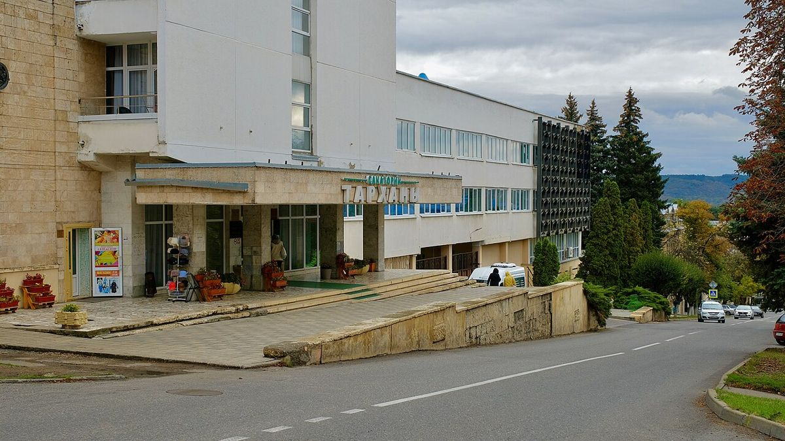
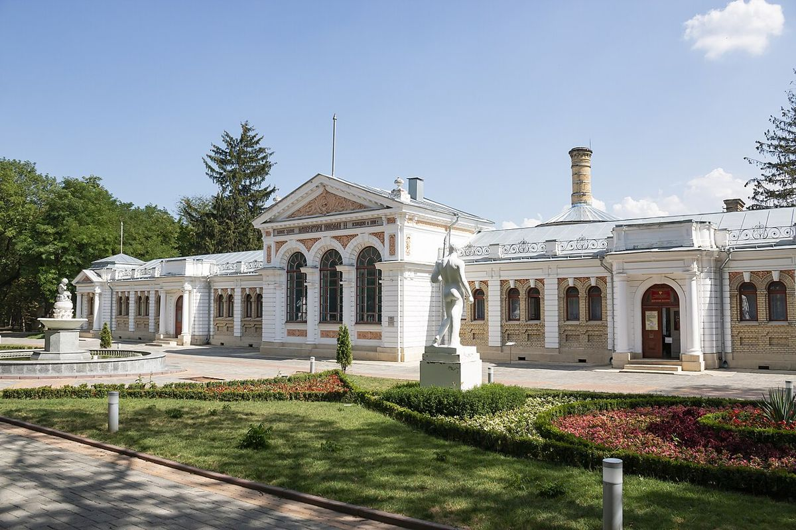

Что на самом деле входит в путёвку с лечением: разбор без мелкого шрифта
Две путёвки в один и тот же город на те же даты могут заметно отличаться в цене — и при этом обе честно называться «с лечением». Разница прячется в деталях, которые редко читают до заселения: сколько процедур в день, что считать «базовой диагностикой», входит ли в стоимость вода из бювета. Попробуем разобрать путёвку на части.
Коротко: в лечебную путёвку обычно входят проживание, питание, приём врача, базовая диагностика, процедуры по назначению и питьё минеральной воды. Обычно не входят дополнительные процедуры и сложная диагностика, часть консультаций, трансфер, экскурсии и туристический налог.

Три типа путёвок
Санатории КМВ обычно предлагают несколько вариантов:
- Без лечения — проживание и питание, иногда бассейн. Процедуры при желании покупаются отдельно.
- Оздоровительная — небольшой набор процедур без глубокой диагностики: ванны, массаж, питьё воды. Подходит для профилактики.
- Лечебная — полноценный курс с приёмом врача, обследованием и процедурами по назначению. Иногда есть специализированные программы: кардиологическая, гастроэнтерологическая, урологическая.
Набор процедур определяет врач после осмотра, а не гость. Если вы ждёте конкретную процедуру — например, грязевые аппликации, — спросите заранее, назначают ли её при вашем диагнозе и входит ли она в программу.
Что обычно входит
В классическую лечебную путёвку чаще всего включены:
- Проживание в выбранной категории номера.
- Питание — диетическое, по системе лечебных столов, заказное меню или шведский стол.
- Приём лечащего врача при заезде, контрольные осмотры и консультация перед отъездом.
- Базовая диагностика — обычно анализы и ЭКГ; более сложные исследования могут быть платными.
- Процедуры по назначению — количество зависит от длительности путёвки: короткий заезд не позволит пройти полноценный курс.
- Питьевое лечение минеральной водой.

Что чаще всего не входит
- Дополнительные процедуры сверх программы и некоторые виды диагностики.
- Консультации узких специалистов — у одних санаториев они включены, у других платные.
- Трансфер от аэропорта или вокзала.
- Экскурсии.
- Туристический налог: с 2025 года он заменил курортный сбор, ставки устанавливают муниципалитеты. Стоит уточнить, включён ли он в итоговую сумму.
Срок путёвки и смысл лечения
Курортное лечение — курсовое. Действие минеральной воды, ванн и грязей накапливается, поэтому врачи обычно рекомендуют заезжать не на несколько дней, а хотя бы на две-три недели. Короткая путёвка может быть приятным отдыхом, но лечебный эффект будет скромнее. Минимальный срок лечебной путёвки в каждом санатории свой.
Документы
Для лечения нужна санаторно-курортная карта (форма 072/у для взрослых). Её оформляют в поликлинике по месту жительства. Если не успели, во многих санаториях карту можно сделать на месте, но это платно и занимает время от начала курса.
Вопросы, которые стоит задать до оплаты
- Сколько процедур в день обычно назначают по моему профилю?
- Какая диагностика включена, а какая — нет?
- Есть ли в санатории свой бювет или ходить к источнику нужно в город?
- Какое питание: можно ли выбирать блюда?
Чтобы сравнить конкретные варианты, удобно посмотреть подборку санаториев Кисловодска с лечением и затем положить несколько программ рядом. На Курортеке для этого есть сравнение санаториев. Цены там указаны на 2026–2027 годы, а точную стоимость на ваши даты уточняет менеджер.
Хорошая путёвка — это не та, где больше всего пунктов. Это та, где вы заранее знаете, что получите за свои деньги.